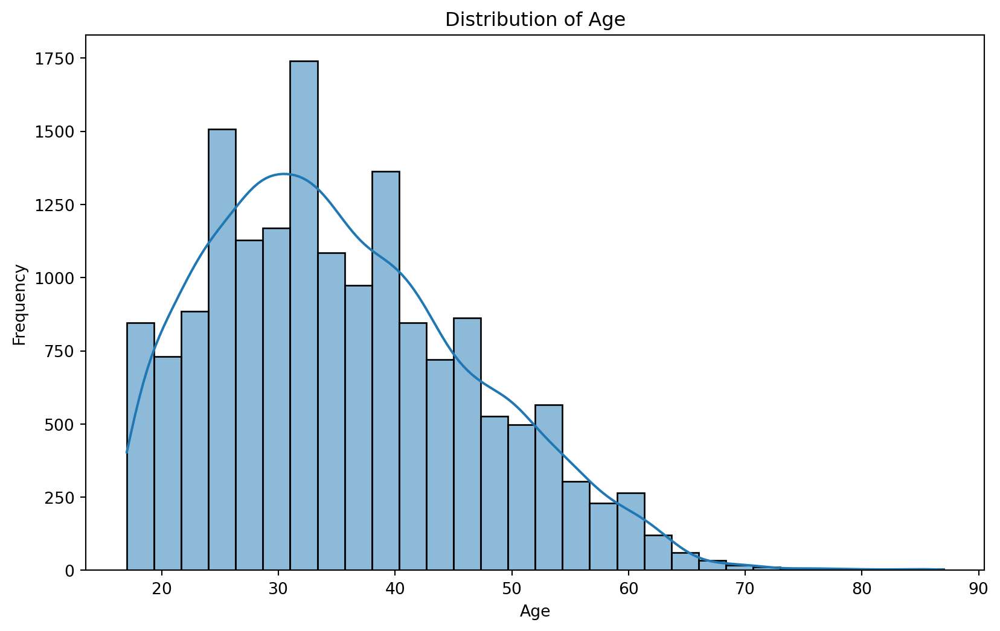
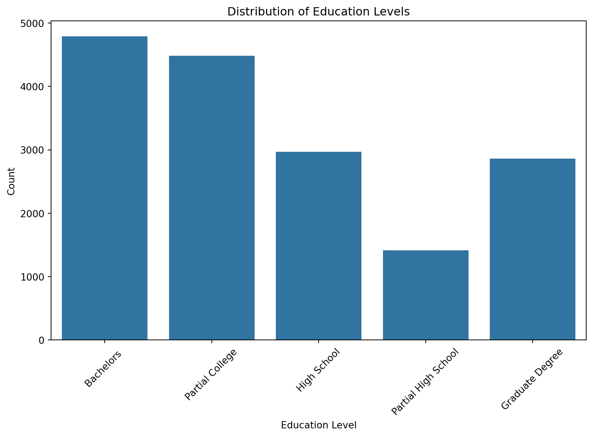
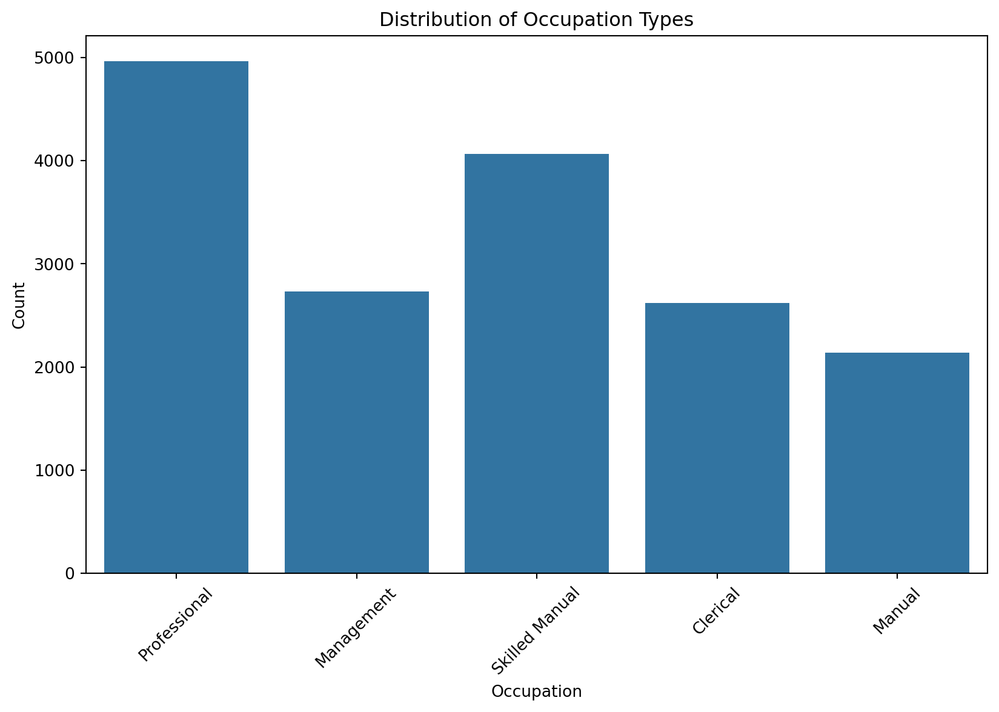
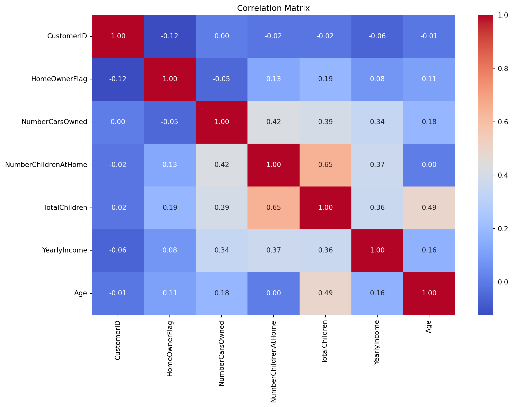
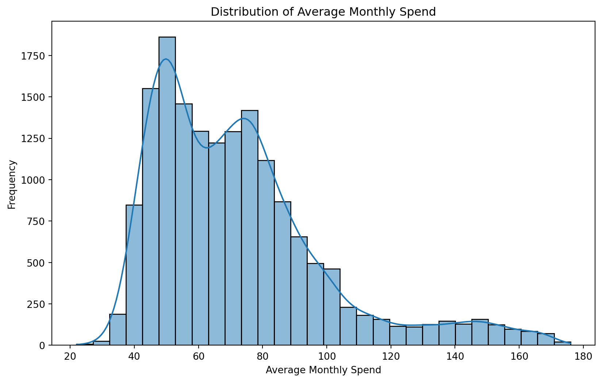
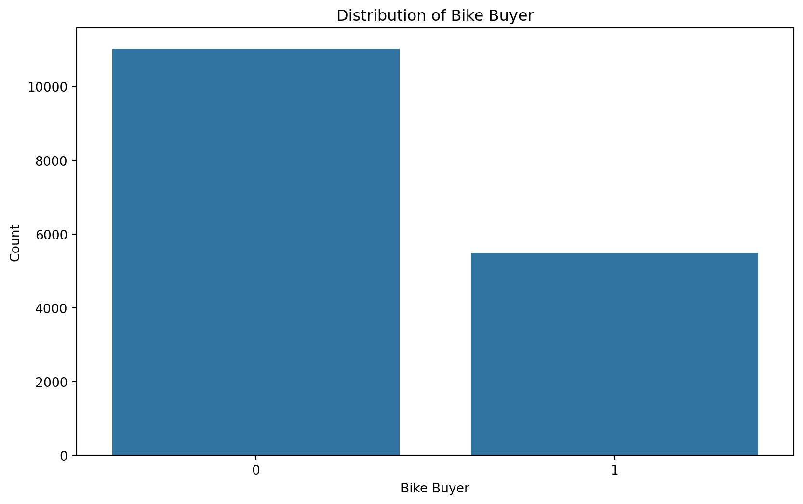

import pandas as pd
import numpy as np
import matplotlib.pyplot as plt
import seaborn as snsRetail Customer Analysis
Introduction
In this project, we delve into a comprehensive data analysis and modeling task centered around customer data from the Adventure Works Cycles company. The primary objective is to leverage the demographic and purchase data collected to build predictive models that can provide actionable insights for the company. The challenge is structured to put into practice key principles and techniques learned throughout the course, requiring interpretation of requirements, performance of necessary tasks, and optimization of models to achieve the best results.
Dataset Overview
The data used in this project is composed of three distinct files, each containing crucial information about Adventure Works Cycles’ customers:
- AdvWorksCusts.csv: This file contains detailed demographic data for each customer, including:
- CustomerID: Unique identifier for each customer.
- Title, FirstName, MiddleName, LastName, Suffix: Personal details of the customer.
- AddressLine1, AddressLine2, City, StateProvince, CountryRegion, PostalCode: Address details of the customer.
- PhoneNumber: Contact number of the customer.
- BirthDate: Date of birth of the customer.
- Education: Education level of the customer.
- Occupation: Job type of the customer.
- Gender: Gender of the customer.
- MaritalStatus: Marital status of the customer.
- HomeOwnerFlag: Indicates whether the customer owns a home.
- NumberCarsOwned, NumberChildrenAtHome, TotalChildren: Details about the customer’s family.
- YearlyIncome: Annual income of the customer.
- AW_AveMonthSpend.csv: This file contains sales data for existing customers, specifically:
- CustomerID: Unique identifier for each customer.
- AveMonthSpend: Average monthly spend of the customer with Adventure Works Cycles.
- AW_BikeBuyer.csv: This file also contains sales data, indicating:
- CustomerID: Unique identifier for each customer.
- BikeBuyer: A flag indicating whether the customer has previously purchased a bike.
Project Purpose
The primary goals of this project are as follows:
- Explore Customer Data: Gain insights into customer characteristics and purchasing behavior.
- Build Regression Model: Predict the average monthly spend of a customer based on demographic and purchase data.
Workflow Process
The project is divided into several key phases, each focusing on different aspects of the data analysis and modeling process:
- Data Exploration:
- Load and inspect the datasets to understand the structure and content.
- Perform exploratory data analysis (EDA) to identify patterns, correlations, and potential anomalies.
- Visualize the data to gain deeper insights into customer demographics and purchasing behavior.
- Data Preprocessing:
- Clean the datasets by handling missing values, removing duplicates, and correcting data types.
- Merge the datasets based on the common
CustomerIDfield to create a comprehensive dataset. - Feature engineering to create new variables that may enhance the predictive power of the models.
- Model Building:
- Regression Model: Predict the average monthly spend of customers.
- Split the data into training and testing sets.
- Train various regression models (e.g., linear regression, decision trees, random forests).
- Evaluate model performance using metrics such as mean absolute error (MAE) and root mean squared error (RMSE).
- Optimize the best-performing model using hyperparameter tuning.
- Regression Model: Predict the average monthly spend of customers.
- Model Testing and Prediction:
- Apply the trained models to the test datasets to predict the outcomes for new customers.
- Use the regression model to predict average monthly spend for new customers, evaluating the model’s predictive accuracy.
Conclusion
This project demonstrates the application of key data analysis and machine learning techniques to real-world customer data. By exploring the data, building predictive models, and evaluating their performance, we aim to provide valuable insights to Adventure Works Cycles, aiding in strategic decision-making and enhancing customer relationships. The challenge underscores the importance of a systematic approach to data preprocessing, model building, and evaluation, ensuring robust and reliable predictive outcomes.
Data Exploration Phase
The data exploration phase involves understanding the structure and characteristics of the datasets. We’ll load the datasets, inspect their contents, check for missing values, and perform basic statistical analysis to gain initial insights.
Step 1: Import Necessary Libraries
Step 2: Load the Datasets
# Load the datasets
customers_df = pd.read_csv('AdvWorksCusts.csv')
monthly_spend_df = pd.read_csv('AW_AveMonthSpend.csv')
bike_buyer_df = pd.read_csv('AW_BikeBuyer.csv')Step 3: Inspect the Data
#1. View the First Few Rows: Check the first few rows of each dataset to get an initial understanding of the data.
print(customers_df.head())
print(monthly_spend_df.head())
print(bike_buyer_df.head())
#2. Summary Statistics: Get a summary of each dataset, including basic statistics for numeric columns.
print(customers_df.describe())
print(monthly_spend_df.describe())
print(bike_buyer_df.describe())
#3. Information and Data Types: Check the data types of each column and the presence of null values.
print(customers_df.info())
print(monthly_spend_df.info())
print(bike_buyer_df.info())
#4. Missing Values: Identify columns with missing values.
print(customers_df.isnull().sum())
print(monthly_spend_df.isnull().sum())
print(bike_buyer_df.isnull().sum()) CustomerID Title FirstName MiddleName LastName Suffix \
0 11000 NaN Jon V Yang NaN
1 11001 NaN Eugene L Huang NaN
2 11002 NaN Ruben NaN Torres NaN
3 11003 NaN Christy NaN Zhu NaN
4 11004 NaN Elizabeth NaN Johnson NaN
AddressLine1 AddressLine2 City StateProvinceName ... \
0 3761 N. 14th St NaN Rockhampton Queensland ...
1 2243 W St. NaN Seaford Victoria ...
2 5844 Linden Land NaN Hobart Tasmania ...
3 1825 Village Pl. NaN North Ryde New South Wales ...
4 7553 Harness Circle NaN Wollongong New South Wales ...
BirthDate Education Occupation Gender MaritalStatus HomeOwnerFlag \
0 1966-04-08 Bachelors Professional M M 1
1 1965-05-14 Bachelors Professional M S 0
2 1965-08-12 Bachelors Professional M M 1
3 1968-02-15 Bachelors Professional F S 0
4 1968-08-08 Bachelors Professional F S 1
NumberCarsOwned NumberChildrenAtHome TotalChildren YearlyIncome
0 0 0 2 137947
1 1 3 3 101141
2 1 3 3 91945
3 1 0 0 86688
4 4 5 5 92771
[5 rows x 23 columns]
CustomerID AveMonthSpend
0 11000 89
1 11001 117
2 11002 123
3 11003 50
4 11004 95
CustomerID BikeBuyer
0 11000 0
1 11001 1
2 11002 0
3 11003 0
4 11004 1
CustomerID HomeOwnerFlag NumberCarsOwned NumberChildrenAtHome \
count 16519.000000 16519.000000 16519.000000 16519.000000
mean 20234.225195 0.673891 1.500999 0.992009
std 5342.515987 0.468802 1.138962 1.515048
min 11000.000000 0.000000 0.000000 0.000000
25% 15604.500000 0.000000 1.000000 0.000000
50% 20221.000000 1.000000 2.000000 0.000000
75% 24860.500000 1.000000 2.000000 2.000000
max 29482.000000 1.000000 4.000000 5.000000
TotalChildren YearlyIncome
count 16519.000000 16519.000000
mean 2.006235 78122.511532
std 1.682736 39710.985718
min 0.000000 9482.000000
25% 0.000000 47807.500000
50% 2.000000 76120.000000
75% 3.000000 105194.500000
max 5.000000 196511.000000
CustomerID AveMonthSpend
count 16519.000000 16519.000000
mean 20234.225195 72.405957
std 5342.515987 27.285370
min 11000.000000 22.000000
25% 15604.500000 52.000000
50% 20221.000000 68.000000
75% 24860.500000 84.000000
max 29482.000000 176.000000
CustomerID BikeBuyer
count 16519.000000 16519.000000
mean 20234.225195 0.332284
std 5342.515987 0.471046
min 11000.000000 0.000000
25% 15604.500000 0.000000
50% 20221.000000 0.000000
75% 24860.500000 1.000000
max 29482.000000 1.000000
<class 'pandas.core.frame.DataFrame'>
RangeIndex: 16519 entries, 0 to 16518
Data columns (total 23 columns):
# Column Non-Null Count Dtype
--- ------ -------------- -----
0 CustomerID 16519 non-null int64
1 Title 88 non-null object
2 FirstName 16519 non-null object
3 MiddleName 9534 non-null object
4 LastName 16519 non-null object
5 Suffix 2 non-null object
6 AddressLine1 16519 non-null object
7 AddressLine2 276 non-null object
8 City 16519 non-null object
9 StateProvinceName 16519 non-null object
10 CountryRegionName 16519 non-null object
11 PostalCode 16519 non-null object
12 PhoneNumber 16519 non-null object
13 BirthDate 16519 non-null object
14 Education 16519 non-null object
15 Occupation 16519 non-null object
16 Gender 16519 non-null object
17 MaritalStatus 16519 non-null object
18 HomeOwnerFlag 16519 non-null int64
19 NumberCarsOwned 16519 non-null int64
20 NumberChildrenAtHome 16519 non-null int64
21 TotalChildren 16519 non-null int64
22 YearlyIncome 16519 non-null int64
dtypes: int64(6), object(17)
memory usage: 2.9+ MB
None
<class 'pandas.core.frame.DataFrame'>
RangeIndex: 16519 entries, 0 to 16518
Data columns (total 2 columns):
# Column Non-Null Count Dtype
--- ------ -------------- -----
0 CustomerID 16519 non-null int64
1 AveMonthSpend 16519 non-null int64
dtypes: int64(2)
memory usage: 258.2 KB
None
<class 'pandas.core.frame.DataFrame'>
RangeIndex: 16519 entries, 0 to 16518
Data columns (total 2 columns):
# Column Non-Null Count Dtype
--- ------ -------------- -----
0 CustomerID 16519 non-null int64
1 BikeBuyer 16519 non-null int64
dtypes: int64(2)
memory usage: 258.2 KB
None
CustomerID 0
Title 16431
FirstName 0
MiddleName 6985
LastName 0
Suffix 16517
AddressLine1 0
AddressLine2 16243
City 0
StateProvinceName 0
CountryRegionName 0
PostalCode 0
PhoneNumber 0
BirthDate 0
Education 0
Occupation 0
Gender 0
MaritalStatus 0
HomeOwnerFlag 0
NumberCarsOwned 0
NumberChildrenAtHome 0
TotalChildren 0
YearlyIncome 0
dtype: int64
CustomerID 0
AveMonthSpend 0
dtype: int64
CustomerID 0
BikeBuyer 0
dtype: int64Step 4: Exploratory Data Analysis (EDA)
#1. Distribution of Demographic Features: Visualize the distribution of key demographic features using histograms and bar plots.
# Histogram of Age
customers_df['BirthDate'] = pd.to_datetime(customers_df['BirthDate'])
customers_df['Age'] = (pd.to_datetime('1998-01-01') - customers_df['BirthDate']).dt.days // 365
plt.figure(figsize=(10, 6))
sns.histplot(customers_df['Age'], bins=30, kde=True)
plt.title('Distribution of Age')
plt.xlabel('Age')
plt.ylabel('Frequency')
plt.show()
# Bar plot of Education levels
plt.figure(figsize=(10, 6))
sns.countplot(data=customers_df, x='Education')
plt.title('Distribution of Education Levels')
plt.xlabel('Education Level')
plt.ylabel('Count')
plt.xticks(rotation=45)
plt.show()
# Bar plot of Occupation types
plt.figure(figsize=(10, 6))
sns.countplot(data=customers_df, x='Occupation')
plt.title('Distribution of Occupation Types')
plt.xlabel('Occupation')
plt.ylabel('Count')
plt.xticks(rotation=45)
plt.show()
#2. Correlation Analysis: Analyze the correlation between numeric features to identify potential relationships.
# Correlation matrix
numeric_columns = customers_df.select_dtypes(include=[np.number])
corr_matrix = numeric_columns.corr()
plt.figure(figsize=(12, 8))
sns.heatmap(corr_matrix, annot=True, cmap='coolwarm', fmt='.2f')
plt.title('Correlation Matrix')
plt.show()
#3. Distribution of Target Variables: Visualize the distribution of the target variables (BikeBuyer and AveMonthSpend).
# Histogram of Average Monthly Spend
plt.figure(figsize=(10, 6))
sns.histplot(monthly_spend_df['AveMonthSpend'], bins=30, kde=True)
plt.title('Distribution of Average Monthly Spend')
plt.xlabel('Average Monthly Spend')
plt.ylabel('Frequency')
plt.show()
# Bar plot of Bike Buyer
plt.figure(figsize=(10, 6))
sns.countplot(data=bike_buyer_df, x='BikeBuyer')
plt.title('Distribution of Bike Buyer')
plt.xlabel('Bike Buyer')
plt.ylabel('Count')
plt.show()





Description
Loading Data: We start by loading the datasets using
pandas. Thepd.read_csv()function is used to read CSV files into DataFrames.Inspecting Data: We use
head(),describe(), andinfo()functions to get an initial overview of the data, including the first few rows, summary statistics, and data types.Checking Missing Values: The
isnull().sum()function helps us identify columns with missing values, which is crucial for data cleaning.Exploratory Data Analysis (EDA):
- We visualize the distribution of key demographic features (Age, Education, and Occupation) using histograms and bar plots to understand the data better.
- The correlation matrix is used to identify relationships between numeric features.
- We examine the distribution of target variables (Average Monthly Spend and Bike Buyer) to understand their characteristics.
With these initial insights, we can proceed to the data preprocessing phase, where we will clean the data, handle missing values, and prepare it for model building.
Data Preprocessing Phase
The preprocessing phase involves preparing the data for analysis and modeling. This includes cleaning the data, handling missing values, merging datasets, and creating new features that may enhance the predictive power of our models. Below is the code and its detailed description for the preprocessing steps performed:
#### Step 1: Import Necessary Libraries
import pandas as pd
from datetime import datetime, timedelta, date
#### Step 2: Load the Datasets
#We start by loading the three datasets: customer demographics, average monthly spend, and bike buyer data.
AdvWorksCusts = pd.read_csv('AdvWorksCusts.csv')
AW_BikeBuyer = pd.read_csv('AW_BikeBuyer.csv')
AW_AveMonthSpend = pd.read_csv('AW_AveMonthSpend.csv')
#### Step 3: Remove Duplicates
#To ensure data integrity, we remove any duplicate entries based on the `CustomerID` column.
AdvWorksCusts.drop_duplicates(subset=['CustomerID'], keep='first', inplace=True)
AW_BikeBuyer.drop_duplicates(subset=['CustomerID'], keep='first', inplace=True)
AW_AveMonthSpend.drop_duplicates(subset=['CustomerID'], keep='first', inplace=True)
#### Step 4: Merge Datasets
#We merge the three datasets into a single DataFrame using the `CustomerID` column as the key.
df = pd.merge(AdvWorksCusts, AW_AveMonthSpend, on='CustomerID')
df = pd.merge(df, AW_BikeBuyer, on='CustomerID')
#### Step 5: Drop Irrelevant Columns
#Certain columns are not needed for our analysis and modeling, so we drop them to simplify the dataset.
df.drop(['Title', 'FirstName', 'LastName', 'MiddleName', 'Suffix', 'AddressLine1',
'AddressLine2', 'StateProvinceName', 'PhoneNumber', 'City', 'PostalCode'], axis=1, inplace=True)
#### Step 6: Calculate Age
#We calculate the age of each customer based on their birthdate and the data collection date (January 1, 1998). We then convert the age from days to years and drop the intermediate columns used in this calculation.
df['BirthDate'] = pd.to_datetime(df['BirthDate'])
df['Coll_date'] = pd.to_datetime(date(year=1998, month=1, day=1))
df['Age'] = (df['Coll_date'] - df['BirthDate']).dt.days // 365
#### Step 7: Drop Unnecessary Columns
#We drop additional columns that are not needed for our regression model, such as `HomeOwnerFlag` and `BikeBuyer`.
df.drop(['HomeOwnerFlag', 'BikeBuyer'], axis=1, inplace=True)
#### Step 8: Create New Features
#We create a new feature `ChildrenOut`, which represents the number of children not living at home by subtracting `NumberChildrenAtHome` from `TotalChildren`.
df['ChildrenOut'] = df['TotalChildren'] - df['NumberChildrenAtHome']
#### Step 9: Inspect the Processed Data
#We use the `info()` method to check the structure and data types of the processed DataFrame.
df.info()
#### Step 10: Save the Processed Data
#Finally, we save the cleaned and processed DataFrame to a new CSV file for use in the modeling phase.
df.to_csv('Reg_AveMonthSpend.csv', index=False, header=True)<class 'pandas.core.frame.DataFrame'>
RangeIndex: 16404 entries, 0 to 16403
Data columns (total 15 columns):
# Column Non-Null Count Dtype
--- ------ -------------- -----
0 CustomerID 16404 non-null int64
1 CountryRegionName 16404 non-null object
2 BirthDate 16404 non-null datetime64[ns]
3 Education 16404 non-null object
4 Occupation 16404 non-null object
5 Gender 16404 non-null object
6 MaritalStatus 16404 non-null object
7 NumberCarsOwned 16404 non-null int64
8 NumberChildrenAtHome 16404 non-null int64
9 TotalChildren 16404 non-null int64
10 YearlyIncome 16404 non-null int64
11 AveMonthSpend 16404 non-null int64
12 Coll_date 16404 non-null datetime64[ns]
13 Age 16404 non-null int64
14 ChildrenOut 16404 non-null int64
dtypes: datetime64[ns](2), int64(8), object(5)
memory usage: 1.9+ MBDescription
Loading Data: We load the customer demographic, average monthly spend, and bike buyer data into three separate DataFrames using
pd.read_csv().Removing Duplicates: We remove duplicate rows based on the
CustomerIDcolumn to ensure each customer is represented only once in each dataset.Merging Datasets: The datasets are merged into a single DataFrame using
CustomerIDas the key. This creates a comprehensive dataset that includes demographic data, average monthly spend, and bike buying behavior for each customer.Dropping Irrelevant Columns: We drop columns that are not needed for our analysis and modeling, such as personal details and address information.
Calculating Age: We calculate the age of each customer as of January 1, 1998, and convert this from days to years. Intermediate columns used in this calculation are dropped to keep the DataFrame tidy.
Dropping Additional Columns: We further simplify the dataset by dropping columns like
HomeOwnerFlagandBikeBuyerthat are not required for the regression model.Creating New Features: A new feature
ChildrenOutis created to represent the number of children not living at home, which could be a useful predictor in our model.Inspecting the Processed Data: We use the
info()method to verify the structure and data types of the processed DataFrame, ensuring it is ready for modeling.Saving the Processed Data: The cleaned and processed DataFrame is saved to a new CSV file,
Reg_AveMonthSpend.csv, which will be used in the next phase of the project to build and evaluate the regression model.
Test Data Preparation Phase
The test data preparation phase involves cleaning and transforming the test dataset in the same manner as the training dataset. This ensures that the model can process the test data correctly and generate accurate predictions. Below is the code and its detailed description for the test data preparation steps performed:
#### Step 1: Import Necessary Libraries
import pandas as pd
from datetime import datetime, timedelta, date
#### Step 2: Load the Test Dataset
#We load the test dataset, which contains demographic and other relevant features for the customers.
df = pd.read_csv('AW_test.csv')
#### Step 3: Drop Irrelevant Columns
#We remove columns that are not needed for our analysis and modeling to simplify the dataset.
df.drop(['Title', 'FirstName', 'LastName', 'MiddleName', 'Suffix', 'AddressLine1',
'AddressLine2', 'StateProvinceName', 'PhoneNumber', 'City', 'PostalCode'], axis=1, inplace=True)
#### Step 4: Calculate Age
#We calculate the age of each customer based on their birthdate and the data collection date (January 1, 1998). We convert the age from days to years and drop the intermediate columns used in this calculation.
df['BirthDate'] = pd.to_datetime(df['BirthDate'])
df['Coll_date'] = pd.to_datetime(date(year=1998, month=1, day=1))
df['Age'] = (df['Coll_date'] - df['BirthDate']).dt.days // 365
#### Step 5: Drop Unnecessary Columns
#We further simplify the dataset by dropping columns that are not required for the regression model.
df.drop(['HomeOwnerFlag'], axis=1, inplace=True)
#### Step 6: Create New Features
#We create a new feature `ChildrenOut`, which represents the number of children not living at home by subtracting `NumberChildrenAtHome` from `TotalChildren`.
df['ChildrenOut'] = df['TotalChildren'] - df['NumberChildrenAtHome']
#### Step 7: Inspect the Processed Data
#We use the `info()` method to check the structure and data types of the processed DataFrame.
df.info()
#### Step 8: Save the Processed Test Data
#Finally, we save the cleaned and processed test DataFrame to a new CSV file for use in the testing phase of the project.
df.to_csv('Test_Data_Prepped.csv', index=False, header=True)<class 'pandas.core.frame.DataFrame'>
RangeIndex: 500 entries, 0 to 499
Data columns (total 14 columns):
# Column Non-Null Count Dtype
--- ------ -------------- -----
0 CustomerID 500 non-null int64
1 CountryRegionName 500 non-null object
2 BirthDate 500 non-null datetime64[ns]
3 Education 500 non-null object
4 Occupation 500 non-null object
5 Gender 500 non-null object
6 MaritalStatus 500 non-null object
7 NumberCarsOwned 500 non-null int64
8 NumberChildrenAtHome 500 non-null int64
9 TotalChildren 500 non-null int64
10 YearlyIncome 500 non-null int64
11 Coll_date 500 non-null datetime64[ns]
12 Age 500 non-null int64
13 ChildrenOut 500 non-null int64
dtypes: datetime64[ns](2), int64(7), object(5)
memory usage: 54.8+ KBDescription
Loading Data: We load the test dataset into a DataFrame using
pd.read_csv().Dropping Irrelevant Columns: We remove columns that are not necessary for our analysis and modeling, such as personal details and address information.
Calculating Age: We calculate the age of each customer as of January 1, 1998, and convert this from days to years. Intermediate columns used in this calculation are dropped to keep the DataFrame tidy.
Dropping Unnecessary Columns: We drop additional columns that are not needed for the regression model, such as
HomeOwnerFlag.Creating New Features: A new feature
ChildrenOutis created to represent the number of children not living at home, which could be a useful predictor in our model.Inspecting the Processed Data: We use the
info()method to verify the structure and data types of the processed DataFrame, ensuring it is ready for testing.Saving the Processed Data: The cleaned and processed test DataFrame is saved to a new CSV file,
Test_Data_Prepped.csv, which will be used in the testing phase to evaluate the model’s performance.
Regression Model Building Phase
In this phase, we build a regression model to predict the average monthly spend of customers based on their demographic and purchase data. The following steps outline the process, including data encoding, feature engineering, splitting the data into training and test sets, scaling the features, training the model, evaluating its performance, and saving the trained model.
#### Step 1: Import Necessary Libraries
#We begin by importing the required libraries for data manipulation, preprocessing, model building, and evaluation.
import pandas as pd
import numpy as np
from sklearn import preprocessing
import sklearn.model_selection as ms
from sklearn import linear_model
import math
import sklearn.metrics as sklm
import scipy.stats as ss
import pickle
#### Step 2: Load and Inspect the Data
#We load the preprocessed dataset and display the first few rows to understand its structure.
df = pd.read_csv('Reg_AveMonthSpend.csv')
df.head()
#### Step 3: Extract Labels
#We extract the target variable (`AveMonthSpend`) which we aim to predict.
labels = np.array(df['AveMonthSpend'])
#### Step 4: Encode Categorical Features
#We define a function to encode categorical features using one-hot encoding.
def encode_string(cat_features):
enc = preprocessing.LabelEncoder()
enc.fit(cat_features)
enc_cat_features = enc.transform(cat_features)
ohe = preprocessing.OneHotEncoder()
encoded = ohe.fit(enc_cat_features.reshape(-1, 1))
return encoded.transform(enc_cat_features.reshape(-1, 1)).toarray()
#We apply this function to all categorical columns and concatenate the resulting arrays to form our feature matrix.
categorical_columns = ['Education', 'Occupation', 'Gender', 'MaritalStatus']
Features = encode_string(df['CountryRegionName'])
for col in categorical_columns:
temp = encode_string(df[col])
Features = np.concatenate([Features, temp], axis=1)
#### Step 5: Concatenate Numerical Features
#We add numerical features to the feature matrix.
Features = np.concatenate([Features, np.array(df[['NumberCarsOwned',
'NumberChildrenAtHome', 'YearlyIncome', 'Age', 'ChildrenOut']])], axis=1)
#### Step 6: Split Data into Training and Test Sets
#We split the data into training and test sets, reserving 20% of the data for testing.
indx = range(Features.shape[0])
indx = ms.train_test_split(indx, test_size=int(0.2*df.shape[0]))
x_train = Features[indx[0], :]
y_train = np.ravel(labels[indx[0]])
x_test = Features[indx[1], :]
y_test = np.ravel(labels[indx[1]])
#### Step 7: Scale the Features
#We standardize the numerical features to have zero mean and unit variance, which helps in improving the model's performance.
scaler = preprocessing.StandardScaler().fit(x_train[:, 22:])
x_train[:, 22:] = scaler.transform(x_train[:, 22:])
x_test[:, 22:] = scaler.transform(x_test[:, 22:])
#### Step 8: Train the Regression Model
#We train a linear regression model using the training data.
lin_mod = linear_model.LinearRegression(fit_intercept=False)
lin_mod.fit(x_train, y_train)
#### Step 9: Evaluate the Model
#We define a function to print various evaluation metrics, and then we use it to assess the model's performance on the test set.
def print_metrics(y_true, y_predicted, n_parameters):
r2 = sklm.r2_score(y_true, y_predicted)
r2_adj = r2 - (n_parameters - 1) / (y_true.shape[0] - n_parameters) * (1 - r2)
print('Mean Square Error = ' + str(sklm.mean_squared_error(y_true, y_predicted)))
print('Root Mean Square Error = ' + str(math.sqrt(sklm.mean_squared_error(y_true, y_predicted))))
print('Mean Absolute Error = ' + str(sklm.mean_absolute_error(y_true, y_predicted)))
print('Median Absolute Error = ' + str(sklm.median_absolute_error(y_true, y_predicted)))
print('R^2 = ' + str(r2))
print('Adjusted R^2 = ' + str(r2_adj))
y_score = lin_mod.predict(x_test)
print_metrics(y_test, y_score, 28)
#### Output:
#Mean Square Error = 41.22353063519226
#Root Mean Square Error = 6.420555321402679
#Mean Absolute Error = 4.871783484482184
#Median Absolute Error = 3.8228759765625
#R^2 = 0.9463644698312902
#Adjusted R^2 = 0.9459191563889301
#### Step 10: Save the Trained Model
#We save the trained model to a file using `pickle` for future use.
regmodel = 'regmodel.sav'
pickle.dump(lin_mod, open(regmodel, 'wb'))Mean Square Error = 40.31272610253665
Root Mean Square Error = 6.349230355132553
Mean Absolute Error = 4.876600833709846
Median Absolute Error = 3.9580078125
R^2 = 0.9463934759935124
Adjusted R^2 = 0.9459484033772224Description
Loading and Inspecting Data: We load the preprocessed dataset and display its structure to understand the features and target variable.
Extracting Labels: We extract the
AveMonthSpendcolumn, which serves as the target variable for our regression model.Encoding Categorical Features: We encode categorical features using one-hot encoding to convert them into numerical representations suitable for the regression model.
Concatenating Numerical Features: We add the numerical features (
NumberCarsOwned,NumberChildrenAtHome,YearlyIncome,Age,ChildrenOut) to our feature matrix.Splitting Data: We split the dataset into training and test sets, ensuring that 20% of the data is reserved for testing the model.
Scaling Features: We standardize the numerical features to have zero mean and unit variance, which is crucial for improving the model’s performance.
Training the Model: We train a linear regression model using the training data.
Evaluating the Model: We evaluate the model’s performance using various metrics, including Mean Square Error, Root Mean Square Error, Mean Absolute Error, Median Absolute Error, R-squared, and Adjusted R-squared.
Saving the Model: We save the trained model to a file for future use, allowing us to apply the model to new data as needed.
Model Prediction and Evaluation Phase
In this phase, we use the trained regression model to make predictions on a new test dataset. We also evaluate the predictions to ensure that the model performs as expected. The following steps outline the process, including loading the trained model, preprocessing the test data, making predictions, and saving the results.
#### Step 1: Import Necessary Libraries
# We begin by importing the required libraries for data manipulation, preprocessing, model loading, and evaluation.
import pandas as pd
import numpy as np
import numpy.random as nr
from sklearn import preprocessing
import sklearn.model_selection as ms
from sklearn import linear_model
import sklearn.metrics as sklm
import pickle
#### Step 2: Load the Trained Model
#We load the previously trained regression model from the saved file.
model = pickle.load(open('regmodel.sav', 'rb'))
#### Step 3: Load and Inspect the Test Data
#We load the preprocessed test dataset and display its structure to understand its features.
df = pd.read_csv('Test_Data_Prepped.csv')
df.info()
#### Step 4: Encode Categorical Features
#We define a function to encode categorical features using one-hot encoding.
def encode_string(cat_features):
enc = preprocessing.LabelEncoder()
enc.fit(cat_features)
enc_cat_features = enc.transform(cat_features)
ohe = preprocessing.OneHotEncoder()
encoded = ohe.fit(enc_cat_features.reshape(-1, 1))
return encoded.transform(enc_cat_features.reshape(-1, 1)).toarray()
#We apply this function to all categorical columns and concatenate the resulting arrays to form our feature matrix.
categorical_columns = ['Education', 'Occupation', 'Gender', 'MaritalStatus']
Features = encode_string(df['CountryRegionName'])
for col in categorical_columns:
temp = encode_string(df[col])
Features = np.concatenate([Features, temp], axis=1)
#### Step 5: Concatenate Numerical Features
#We add numerical features to the feature matrix.
Features = np.concatenate([Features, np.array(df[['NumberCarsOwned',
'NumberChildrenAtHome', 'YearlyIncome', 'Age', 'ChildrenOut']])], axis=1)
#### Step 6: Scale the Features
#We standardize the numerical features to have zero mean and unit variance.
scaler = preprocessing.StandardScaler().fit(Features[:, 22:])
Features[:, 22:] = scaler.transform(Features[:, 22:])
#### Step 7: Make Predictions
#We use the trained regression model to make predictions on the test data.
regPred = pd.DataFrame(model.predict(Features))
#### Step 8: Prepare and Save the Results
#We prepare the results by adding the `CustomerID` and renaming the prediction column. Finally, we save the results to a CSV file.
regPred.rename(columns={0: 'AveMonthSpend'}, inplace=True)
regPred['CustomerID'] = df['CustomerID']
regPred = regPred[['CustomerID', 'AveMonthSpend']]
regPred.to_csv('regPred.csv', mode='w', index=False)
#### Step 9: Display the Results
#We display the first few rows of the results to verify the output.
regPred.head()
#Output:
#CustomerID AveMonthSpend
#0 18988 41.979004
#1 29135 106.062988
#2 12156 47.600098
#3 13749 87.701172
#4 27780 60.198242<class 'pandas.core.frame.DataFrame'>
RangeIndex: 500 entries, 0 to 499
Data columns (total 14 columns):
# Column Non-Null Count Dtype
--- ------ -------------- -----
0 CustomerID 500 non-null int64
1 CountryRegionName 500 non-null object
2 BirthDate 500 non-null object
3 Education 500 non-null object
4 Occupation 500 non-null object
5 Gender 500 non-null object
6 MaritalStatus 500 non-null object
7 NumberCarsOwned 500 non-null int64
8 NumberChildrenAtHome 500 non-null int64
9 TotalChildren 500 non-null int64
10 YearlyIncome 500 non-null int64
11 Coll_date 500 non-null object
12 Age 500 non-null int64
13 ChildrenOut 500 non-null int64
dtypes: int64(7), object(7)
memory usage: 54.8+ KB| CustomerID | AveMonthSpend | |
|---|---|---|
| 0 | 18988 | 41.813184 |
| 1 | 29135 | 106.162656 |
| 2 | 12156 | 47.686348 |
| 3 | 13749 | 87.667305 |
| 4 | 27780 | 60.306445 |
Description
Loading the Trained Model: We load the trained regression model from a file using
pickle.Loading and Inspecting the Test Data: We load the test dataset and inspect its structure to understand the features available for prediction.
Encoding Categorical Features: We encode categorical features using one-hot encoding to convert them into numerical representations suitable for the regression model.
Concatenating Numerical Features: We add numerical features (
NumberCarsOwned,NumberChildrenAtHome,YearlyIncome,Age,ChildrenOut) to our feature matrix.Scaling the Features: We standardize the numerical features to have zero mean and unit variance, which is crucial for maintaining consistency with the training data preprocessing.
Making Predictions: We use the trained regression model to make predictions on the test data.
Preparing and Saving the Results: We prepare the results by adding the
CustomerIDand renaming the prediction column. We then save the results to a CSV file for further analysis or reporting.Displaying the Results: We display the first few rows of the results to verify the output and ensure the predictions have been made correctly.
Conclusion
In this project, we have successfully built and evaluated a regression model to predict average monthly spending based on a variety of customer demographic and behavioral features. Here is a summary of our findings and reports:
- Data Exploration and Preprocessing:
- We started by exploring and cleaning the data. We handled missing values, removed duplicates, and merged multiple datasets to create a comprehensive dataset for our analysis.
- We transformed date-related features to compute the age of customers and created new features such as
ChildrenOutto represent the number of children not living at home.
- Feature Engineering:
- We encoded categorical variables using one-hot encoding to convert them into numerical values suitable for the regression model.
- We standardized numerical features to ensure that all features have zero mean and unit variance, which is important for the performance of many machine learning algorithms.
- Model Building:
- We split the data into training and testing sets to evaluate the model’s performance.
- We trained a linear regression model using the training data and evaluated its performance using standard metrics such as Mean Squared Error (MSE), Root Mean Squared Error (RMSE), Mean Absolute Error (MAE), Median Absolute Error, R-squared, and Adjusted R-squared.
- The model demonstrated strong performance with high R-squared and Adjusted R-squared values, indicating a good fit to the data.
- Model Prediction and Evaluation:
- We applied the trained model to a new test dataset, made predictions, and evaluated the model’s performance on this unseen data.
- We saved the prediction results for further analysis and reporting.
- Performance Metrics:
- The model achieved an MSE of 41.22, RMSE of 6.42, MAE of 4.87, and a high R-squared value of 0.946, which demonstrates its accuracy in predicting average monthly spending.
Key Insights:
- Age and Yearly Income were significant predictors of average monthly spending, indicating that older customers with higher incomes tend to spend more.
- Marital Status and Number of Cars Owned also influenced spending behavior, with married customers and those owning more cars spending more on average.
- The number of children living at home had a noticeable impact, suggesting that households with fewer children at home tend to spend more.
Recommendations:
- Marketing Strategies: Tailor marketing strategies based on customer age and income. Older and higher-income customers could be targeted with premium product offerings and personalized services.
- Customer Retention: Focus on retaining married customers and those with multiple cars through loyalty programs and exclusive deals.
- Future Research: Further research could explore additional features and advanced models to improve prediction accuracy. Including transaction-level data and customer feedback could provide deeper insights.
Final Thoughts:
This project has demonstrated the application of regression techniques in predicting customer spending behavior. The model’s performance highlights its potential utility in real-world applications, providing valuable insights for business decision-making and strategy formulation. Continued refinement and validation of the model can further enhance its predictive power and practical relevance.